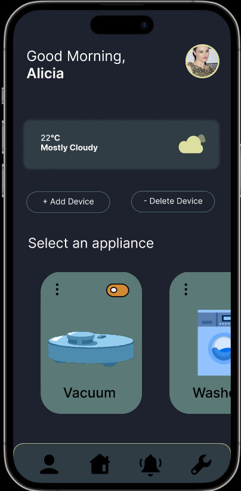
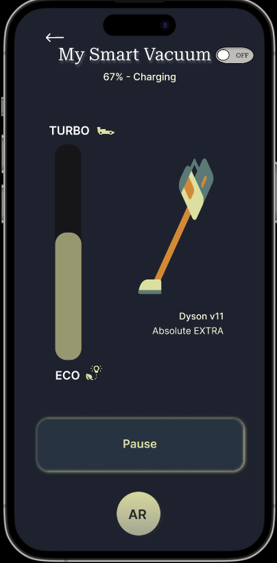
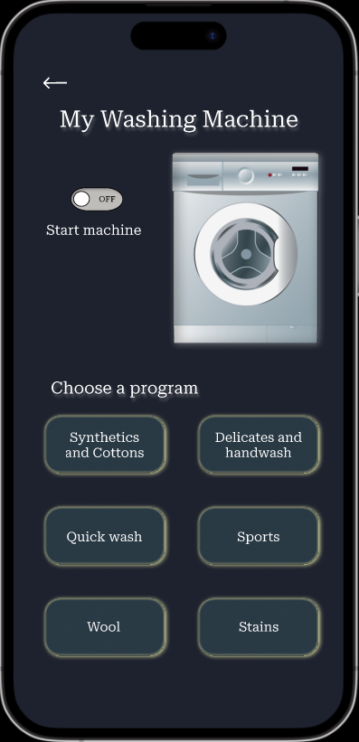
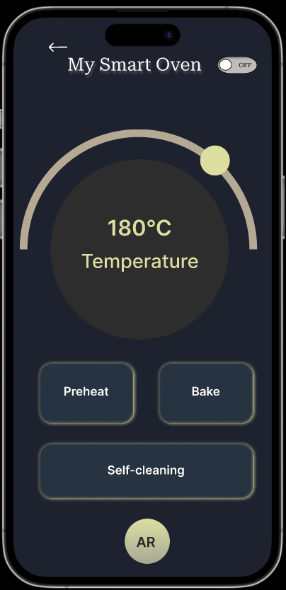

Main Page
In the Main Page the user is a greeted with a welcoming message. In the tab bar the users can choose to go to their account, notifications or settings. The users can also see in the main page what appliances they can manage through the application and they can also choose to add a new device or delete one that's already connected.

Vacuum Cleaner
In the Vacuum Cleaner page the users can turn on and off the vacuum, check the vacuum's battery and the vacuum's power level that is set through Augmented Reality (demonstration in video made with Adobe Aero). They can also pause the cleaning program.

Washing Machine
In the Washing Machine page the users can turn on and off the machine and choose a washing program, where they can also see how long the cycle is and the temperature used in the program.

Oven
In the Oven page the users can turn on and off the oven and check the oven's temperature and baking time. The users also have the options to preheat, bake and start the self-cleaning program.
